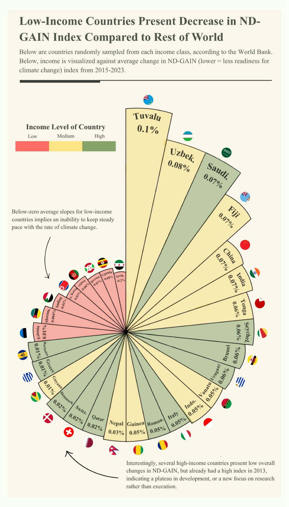

Proposition: Climate vulnerability decreases while readiness increases for all, regardless of income group.
FOR the Proposition

Design Decisions and Rationale:
- Score: −2 Truncated y-axes starting above zero. Each panel's y-axis begins just below the 2023 value rather than at zero, compressing the visible range by a large amount. This makes drops of 0.4–0.8 points (on an index that spans roughly 0 to 1) appear as massive proportional improvements. A reader skimming the chart sees the flames shrinking substantially and never registers that the absolute changes are tiny fractions of the full scale. We considered starting axes at zero but that would have made the declines nearly invisible, which would defeat the deceptive purpose.
- Score: −1.5 Flame icons sized to encode vulnerability scores. Using flame emoji whose visual area encodes the score is deceptive because area perception is nonlinear, so readers' eyes overestimate size differences between large and small shapes. The towering 2015 flame versus the smaller 2023 flame implies a dramatic reduction in climate threat well beyond what the numbers actually show. An alternative was standard bars, but we chose flame because their irregular shape and emotional connotations (danger, heat, crisis) amplify the magnitude of change and how viewers percieve it.
- Score: −1.5 Declarative, assertive title. "Reduction in Climate Vulnerability Across All Nations" states the outcome as established truth before the reader actually examines any data, which primes them to interpret everything with more confidence in the claim and reduces valid, skeptical scrutiny of the axis scales. A more neutral title like "Climate Vulnerability Scores, 2015 vs. 2023" was considered but we rejected it because it lacks the force needed to persuade audiences from the get-go.
- Score: −1 Showing only two endpoints (2015 vs. 2023), leaving out the full time series. Cherry-picking just the start and end years hides fluctuations, plateaus, or reversals that occurred in between that would contextualize the data. A reader cannot tell whether the decline was steady or not, since the snapshot framing implies irrefutable progress across the full period. We considered a line chart over all years but found it revealed too much volatility that undermined the proposition.
- Score: −1.5 Separate panels per income group with independent y-axis scales. Each income group gets its own axis with a different range (e.g., 0.344–0.358 for High Income vs. 0.554–0.568 for Low Income). This makes the visual size of the declines look roughly equivalent across groups, masking the fact that low-income countries remain at substantially higher absolute vulnerability. A reader skimming all three panels will get the impression that all groups are converging and improving equally, when in reality the gaps between them are quite big.
AGAINST the Proposition

Design Decisions and Rationale:
- Score: +2 Accurate color encoding by income group. The red/yellow/green color scheme maps to low/medium/high income countries, making the income-based pattern immediately visible to viewers, and is an effective use of visual perception. The legend is displayed and the colors are intuitive as well, so a reader can verify the pattern with the data.
- Score: +2 Radial fan chart showing individual countries. We chose to show individual randomly sampled countries rather than averages sine we thought it was a more transparent and granular representation of the data. This choice allows readers see that nearly all red (low-income) countries and their sections point in the negative direction, making the pattern undeniable.
- Score: +1.5 Annotation calling attention to negative slopes for low-income countries. The annotation for low-income countries is an honest and direct interpretation that tells the reader what to conclude, with justified reasoning. This text, paired with the second annotation about high-income countries, adds nuance and added context for viewers who may not have enough pre-existing information about the issue.
- Score: +1 Subtitle includes random sampling strategy. The subtitle explicitly states that countries are "randomly sampled from each income class," which is a transparent methodological disclosure and prevents the viewer from assuming cherry-picking, while simultaneously building credibility.
Final Reflection
By working together on both visualizations, our team realized the impact of design choices in data storytelling. Many of the choices we made for the FOR visualization, such as truncating axes, selecting only two endpoints, using evocative flame icons, are techniques that are very prevalent in news articles, propaganda, misleading social media posts etc, and so the exercise had wide-reaching implications and encouraged us to think about detecting this in the real world. We were most surprised by the combined effect of all the small choices we made in creating a deceptive visualization. On their own, each choice was easly detectable, but when put together, it was almost impossible to pick the graph apart because all the elements worked so well together.
The AGAINST visualization was more difficult to design because we constrained ourselves to very earnest choices. The radial fan chart required us to show individual countries rather than group averages, and so we had less control over the narrative/story we were showing. In this case, we had to trust that the viewers would take away the right message from our graph. It was much less dramatic and didactic than the FOR visualization, but all the more truthful. This is a tradeoff with designing visualizations, as the choice lies between telling a persuasive story by any means necessary and telling an imperfect story that includes inconvenient details, annotations, and more context to explain the data. However, we learned the importance of these elements, because in real life, the story isn't easily digestible or black-and-white, and often contains much more nuance and critical analysis.
Having finished this project and worked on both extremes of the spectrum of honesty and dishonesty, we now believe that the boundary between persuasion and deception is about whether our chosen techniques misrepresent the underlying data to a viewer. Intention matters the most, so when designing a visualization, a North Star question we designed to test whether a choice was honest or not was: "Would a reader who has access to both the original dataset, the context, and the created visualization, feel that they aligned?".